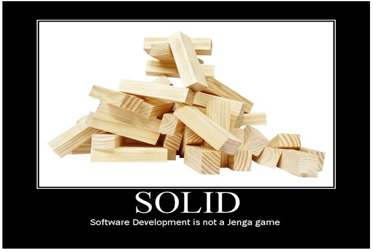
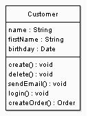
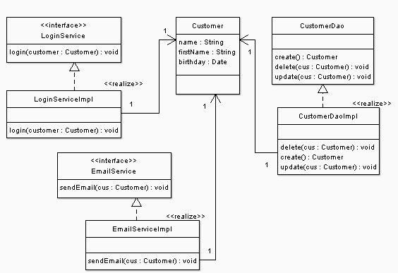
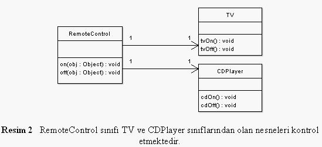
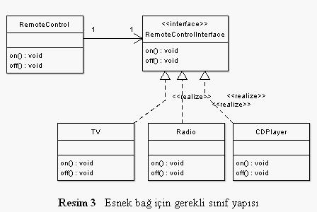

Merhaba arkadaslar bugun 2 seriden olusucak olan SOLID prensiblerinin ilk serisini bildigim kadariyla anlatmaya calisicagim. SOLID dediğimiz ( Single responsibility , Open-closed , Liskov substitution , Interface segregation ve Dependency inversion ) yazılım tasarım prensibleri için kullanılan bir kısaltmadır.TDD(Tes Driven Development) un vaz geçilmezidir.Yani bu prensibi kullandığımızda geliştirmesi ve bakımı en kolay yazılımı yapbilmemiz daha muhtemeldir.
S ingle Responsibility Principle
- Her yazılım biriminin (sınıf, nesne, metot) tek bir sorumluluğu olmalıdır.
O pen/Closed Principle
- Yazılım birimleri geliştirilmeye açık, değişikliğe kapalı olmalıdır.
L iskov’s Substitution Principle
- Alt sınıflardan oluşturulan nesneler üst sınıfların nesneleriyle yer değiştirdiklerinde aynı davranışı göstermek zorundadırlar.
I nterface Segregation Principle
- Herşeyi ihtiva eden interface sınıflar yerine belli bir işlemi yapan interface sınıflar oluşturulmalıdır.
D ependency Inversion Principle
- Bağımlılıklar soyut sınıflara doğru olmalıdır.
Single Responsibility Principle
Türkce karşılıgına birebir örtüşüyor bu prensip aslına tek sorumluluk prensibi.Yani her yazılım biriminin(class,method..) tek bir sorumlulugu olmasi gerekir.

Yukarıdaki gibi bir Customer sınıfımızı incelediğimizde single responsibility ilkesine uymadığı bariz ortada.Bütün iş tek bir sınıfa yüklenmiş.

Yukarıdaki customer sınıfının işini faklı sınıflara ayırarak esnek bir yapi olusturduk.Bu yapida tam olarak single responsibility ilkesine uymaktadir.
Open Closed Principle
Bir yazılımda değişmeyen birşey varsa o da değişimin kendisidir.Gün geçtikce her yazılıma farklı özellikler eklenerek gelişir buda developmentın bir parçasıdır zaten.Peki ilerde lazım olabilecek methodları geliştirme sürecinde önceden yazmalımıyız? Tabiki hayır zaten geleceği görmek neredeyse imkansız.Çevik süreçde budur aslında yalnızca ihtiyac olanları yap geleceği hiç düşünme.Peki ne yapmalıyız? Bu çevik tasarım prensiplerini kullanarak istediğimiz bir yapıda, bakımı ve geliştirilmesi kolay bir şekilde yazabiliriz kodumuzu.İşte bu konuda open closed principle devreye giriyor.Bu prensibi kısaca açıklarsak;
“Programlar geliştirilmeye açık ama değiştirilmeye kapalı olmalıdır.”
Programı geliştirmek yeni methodlar eklemek anlamına geliyor.(Değiştirmek değil eklemek,eğer değiştirirsek ocp ters düşmüş oluyoruz.Çok standart olan RemoteControl – TV örneği üzerinden pekiştirmeye çalışalım bu prensibi.

public class RemoteControl {
public void on(Object obj) {
if (obj instanceof TV) {
((TV) obj).tvOn();
} else if (obj instanceof CDPlayer) {
((CDPlayer) obj).cdOn();
}
}
public void off(Object obj) {
if (obj instanceof TV) {
((TV) obj).tvOff();
} else if (obj instanceof CDPlayer) {
((CDPlayer) obj).cdOff();
}
}
}Bu kodun ocp uymadıgı bariz belli gibi.Nedemiştik yazılım geliştirmeye açık değiştirmeye kapalı olmalıdır.Her eklediğimiz cihazda on ve off methodlarını değiştirmemiz gerekmekte ve buda ilerde kodumuzun okunabilirliğini ve esnekliğini tehlike altına sokar.Ocp a göre uyarlarsak kodumuzu;

public class RemoteControl implements RemoteControlInterface {
private RemoteControlInterface remote;
public RemoteControl(RemoteControlInterface remote) {
this.remote = remote;
}
public void on() {
remote.on();
}
public void off() {
remote.off();
}
}Yukarıdaki kodda on ve off methodları değişikliğe kapalı ve geliştirmeye açıktır.Çünkü yarın birgün bir cihaz eklemeye kalktıgımızda if else gibi karar yapıları ile uğraşmicaz veya on off methodlarımızı değiştirmicez tek yapmamız gereken RemoteControlInterface interface inden implemente etmek.
Arkadaslar umarim faydali olmustur kalan 3 prensibi( Liskov substitution , Interface segregation ve Dependency inversion ) diger yazimda anlatmaya calisicam.
Mutlu ve esen kalın :) .